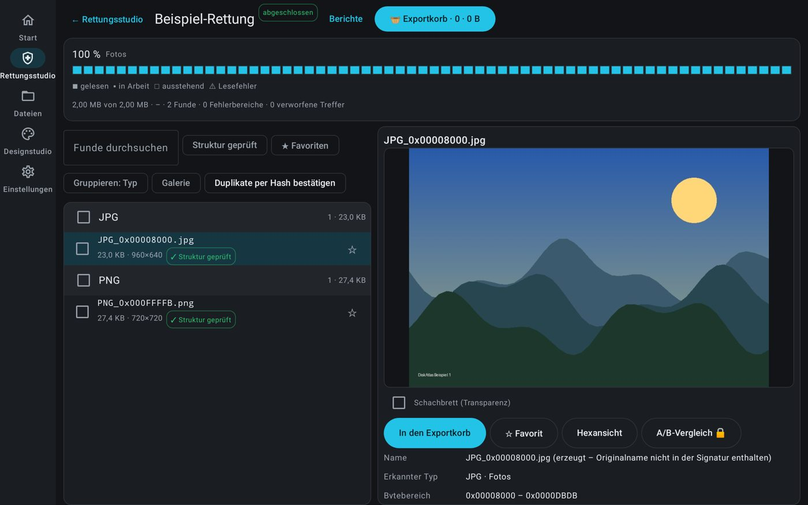
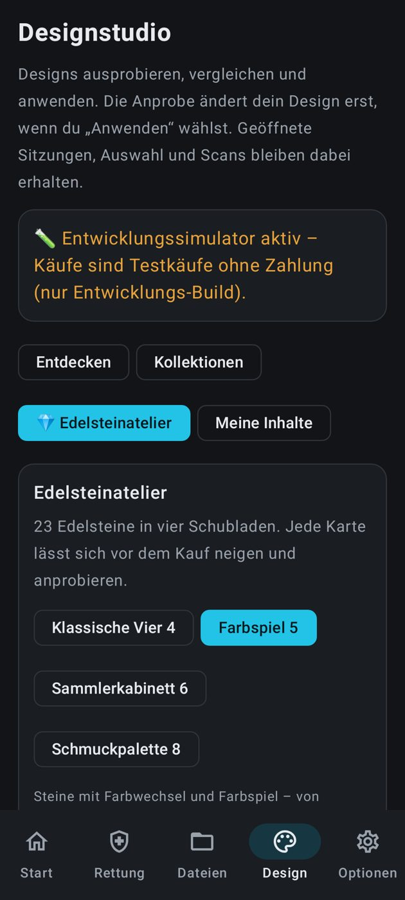

DiskAtlas
Data recovery & file lists for Windows and Android · Flondy Dev.
Recover photos and files safely. DiskAtlas finds photos and documents in disk images by their content, shows them large and exports them to a separate folder. Every exported file is verified with SHA-256. The source is only read.
Features
- Recovery Studio: result list on the left, large zoomable preview on the right
- Export basket with name conflicts and verification receipt (JSON + CSV)
- Sessions with timeline, favorites, duplicates by hash and resume
- File lists: overview, search, duplicates, CSV, comparison
- Windows: drives, create disk image, NTFS undelete, S.M.A.R.T.
- Design Studio with try-on – including the Gemstone Atelier with 23 stones



Privacy policy · Terms · Contact: flondy.dev@gmail.com